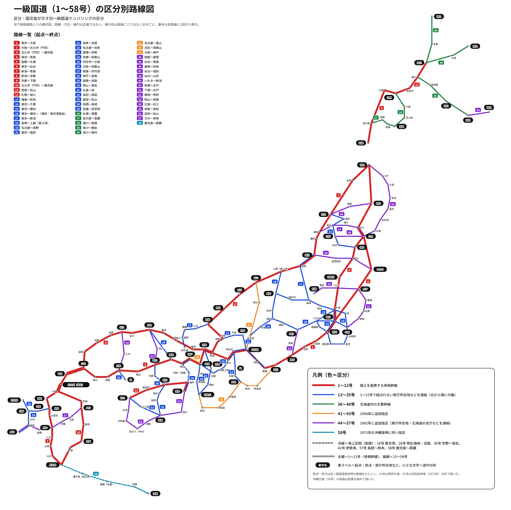

一級国道（1〜58号）の区分別路線図
区分：国交省が示す旧一級国道ナンバリングの区分。地下鉄路線図ふうの模式図で、線の色は路線ごとではなく区分ごと。作成：Claude（2026-11-04）

凡例：赤＝1〜12号（骨格幹線・太線）、青＝13〜35号、緑＝36〜40号（北海道）、橙＝41〜43号（1958年追加）、紫＝44〜57号（1962年追加）、水色＝58号（1972年沖縄復帰）。点線は海上区間（16・28・30・42・57・58号）。
自信のない経路：
- 42号は浜松延伸後（1975年）の形。1958年指定時の起点（松阪市と思われる）は未確認。
- 23号の1952年指定時の起点（名古屋市か豊橋市か）は未確認。図は現行の豊橋〜伊勢。
- 27号の終点は京丹波町（旧丹波町、9号接続）として描いた。1952年指定時に京都市までだったかは未確認。
- 16号は環状化後の形。1952年指定時は横浜〜横須賀のみ。
- 途中の町は主なものだけ。実際の経路（峠・海岸）の細かな曲がりは省略。
起点・終点はすべて自分の知識で描いたもので、国交省や Wikipedia のページはこのセッションのネットワーク制限で照合できなかった（未）。
描いた路線（起点〜終点）（未）
| 号 | 起点〜終点 | 主な経由地（図に描いたもの） |
|---|---|---|
| 1 | 東京〜大阪 | 横浜・小田原・沼津・静岡・浜松・豊橋・名古屋・四日市・亀山・草津・京都 |
| 2 | 大阪〜北九州（門司） | 神戸・明石・姫路・岡山・福山・広島・岩国・徳山・山口・下関 |
| 3 | 北九州（門司）〜鹿児島 | 小倉・福岡・鳥栖・久留米・熊本・八代・水俣・川内 |
| 4 | 東京〜青森 | 大宮・宇都宮・郡山・福島・仙台・古川・盛岡 |
| 5 | 函館〜札幌 | 長万部・小樽 |
| 6 | 東京〜仙台 | 水戸・いわき |
| 7 | 新潟〜青森 | 鶴岡・酒田・秋田・弘前 |
| 8 | 新潟〜京都 | 長岡・上越・富山・金沢・福井・敦賀・米原・彦根・草津 |
| 9 | 京都〜下関 | 亀岡・福知山・豊岡・鳥取・米子・松江・出雲・浜田・益田・山口 |
| 10 | 北九州（門司）〜鹿児島 | 小倉・別府・大分・延岡・宮崎・都城 |
| 11 | 徳島〜松山 | 鳴門・高松・新居浜 |
| 12 | 札幌〜旭川 | 岩見沢・滝川 |
| 13 | 福島〜秋田 | 米沢・山形・新庄・横手 |
| 14 | 東京〜千葉 | ― |
| 15 | 東京〜横浜 | ― |
| 16 | 横浜〜横浜（環状） | 横須賀〜（東京湾・点線）〜富津・木更津・千葉・柏・大宮・八王子・相模原 |
| 17 | 東京〜新潟 | 大宮・熊谷・高崎・長岡 |
| 18 | 高崎〜上越（直江津） | 軽井沢・長野 |
| 19 | 名古屋〜長野 | 多治見・中津川・塩尻・松本 |
| 20 | 東京〜塩尻 | 八王子・甲府・諏訪 |
| 21 | 岐阜〜米原 | 大垣 |
| 22 | 名古屋〜岐阜 | ― |
| 23 | 豊橋〜伊勢 | 岡崎・名古屋・四日市・津・松阪 |
| 24 | 京都〜和歌山 | 奈良・橋本 |
| 25 | 四日市〜大阪 | 亀山・伊賀上野・天理 |
| 26 | 大阪〜和歌山 | 堺・岸和田 |
| 27 | 敦賀〜京丹波（9号接続） | 小浜・舞鶴・綾部 |
| 28 | 神戸〜徳島 | 明石〜（明石海峡・点線）〜洲本〜（鳴門海峡・点線）〜鳴門 |
| 29 | 姫路〜鳥取 | ― |
| 30 | 岡山〜高松 | 宇野〜（点線）〜高松 |
| 31 | 広島（海田）〜呉 | ― |
| 32 | 高松〜高知 | 琴平・池田 |
| 33 | 高知〜松山 | 久万高原 |
| 34 | 鳥栖〜長崎 | 佐賀・武雄・大村・諫早 |
| 35 | 武雄〜佐世保 | ― |
| 36 | 札幌〜室蘭 | 千歳・苫小牧 |
| 37 | 長万部〜室蘭 | 洞爺・伊達 |
| 38 | 滝川〜釧路 | 富良野・帯広 |
| 39 | 旭川〜網走 | 北見 |
| 40 | 旭川〜稚内 | 名寄 |
| 41 | 名古屋〜富山 | 高山 |
| 42 | 浜松〜和歌山 | 伊良湖〜（伊勢湾・点線）〜鳥羽・伊勢・尾鷲・新宮・田辺 |
| 43 | 大阪〜神戸 | ― |
| 44 | 釧路〜根室 | ― |
| 45 | 仙台〜青森 | 石巻・気仙沼・釜石・宮古・久慈・八戸 |
| 46 | 盛岡〜秋田 | 角館 |
| 47 | 仙台〜酒田 | 古川・鳴子・新庄 |
| 48 | 仙台〜山形 | ― |
| 49 | いわき〜新潟 | 郡山・会津若松 |
| 50 | 前橋〜水戸 | 桐生・小山 |
| 51 | 千葉〜水戸 | 成田・佐原・鹿嶋 |
| 52 | 静岡〜甲府 | 身延 |
| 53 | 岡山〜鳥取 | 津山 |
| 54 | 広島〜松江 | 三次 |
| 55 | 徳島〜高知 | 室戸 |
| 56 | 高知〜松山 | 須崎・四万十（中村）・宇和島・大洲 |
| 57 | 大分〜長崎 | 竹田・阿蘇・熊本〜（島原湾・点線）〜島原・諫早 |
| 58 | 鹿児島〜那覇 | 〜（点線）〜種子島（西之表）〜（点線）〜奄美（名瀬）〜（点線）〜名護 |